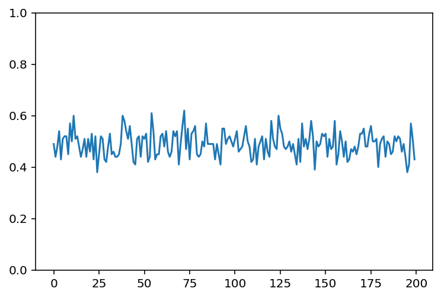
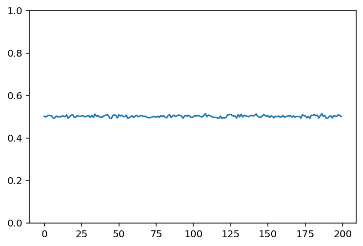
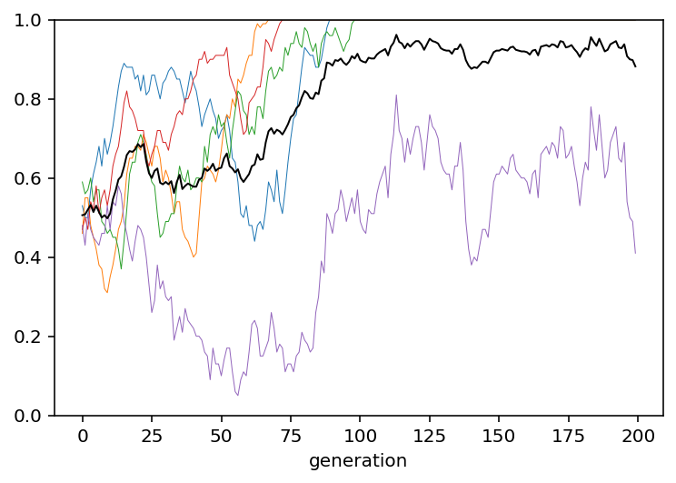
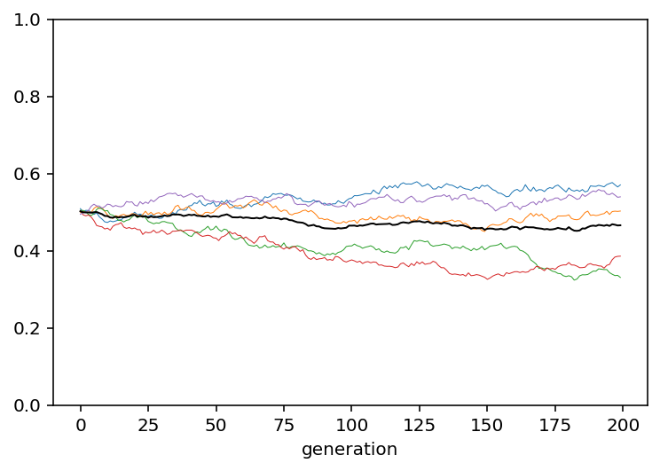
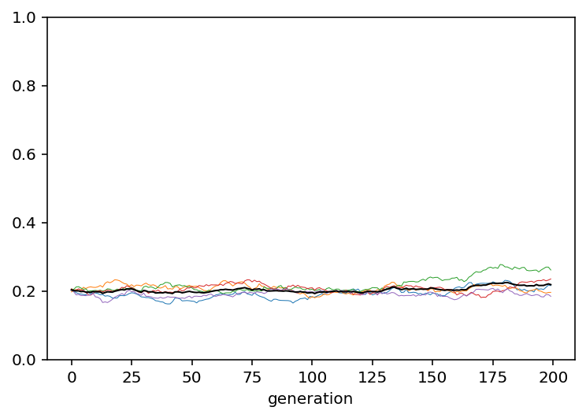

import numpy as np
import pandas as pd3 Unbiased transmission
Note
This chapter is based on “Chapter 1: Unbiased transmission” in (Acerbi et al., 2022).
In this chapter, we introduce the most basic model for cultural inheritance: unbiased transmission. This process quite literally corresponds to randomly copying traits from previous generations, without any further distinctions and constraints. While this is obviously a too reductive model for how cultural transmission works, it is ideally suited to get us started with the enterprise of modeling evolutionary processes involving random variation.
First we import some modules.
Because we will model evolutionary processes that are not strictly deterministic, we need to simulate variations due to random change. For this, we can use the default random number generator from the NumPy library and store it in the variable rng.
rng = np.random.default_rng()Next, we define some basic variables that we take into account for our first model. We consider a population of \(N=100\) individuals as well as a time-frame of \(t_{max}=100\) generations.
3.1 Simulating a population
N = 100
t_max = 100
Note
In general, we use the variable t to designate generation counts.
Now we create a variable population that will store the data about our simulated population. This population has either of two traits "A" and "B", with a certain probability. We store all of this in a so-called ‘data frame’, which is a somewhat fancy, Pandas-specific term for a table.
population = pd.DataFrame(
{"trait": rng.choice(["A", "B"], size=N, replace=True)}
)Let’s take this code apart to understand it better. From the Pandas library, which we imported as the alias pd, we create a DataFrame object. The data contained in this the data frame population is specified via a dictionary that has "trait" as its key and a fairly complex expression starting with the random number generator rng as its value. What this value says is, from the list ["A", "B"] choose randomly N instances with replacement (if replace were set to False, we could at most sample 2 values from the list). So, the data frame population should contain 100 randomly sampled values of A’s and B’s. Let’s confirm this:
population| trait | |
|---|---|
| 0 | A |
| 1 | A |
| 2 | B |
| 3 | B |
| 4 | A |
| ... | ... |
| 95 | A |
| 96 | B |
| 97 | B |
| 98 | B |
| 99 | B |
100 rows × 1 columns
As you can see, population stores a table with 100 rows (many of them omitted here for display reasons) and a single column called ‘trait’. Each row in the ‘trait’ column contains either the value A or B. To the left of the data frame you can see the numbers of rows explicitly spelled out. This is called the data frame’s index.
Note
A and B are just placeholder names for any of two mutually exclusive cultural traits. These could be, for example, preference for red over white whine (ignoring people who like rosé as well as people who have no preference). You see already here that this is a massive oversimplification of actual taste preferences. The point here is not to construct a plausible model but rather to gradually build up a simple one in order to understand well its inner workings.
It will help to pause for a moment and to think of other examples that “A” and “B” could stand for. Can you come up with a music-related one?
We can count the number of A’s and B’s as follows:
population["trait"].value_counts()B 56
A 44
Name: trait, dtype: int64You can read the above code as “From the population table, select the ‘trait’ colum and count its values.”. Since there were only two values to sample from and they were randomly (uniformly) sampled, the number of A’s and the number of B’s should be approximately equal. We can obtain their relative frequencies by adding setting the normalize keyword to True:
population["trait"].value_counts(normalize=True)B 0.56
A 0.44
Name: trait, dtype: float643.2 Tracing cultural change
We now create a second data frame output in which we will store the output of our model. This data frame has two columns: generation, which is the number of the simulated generation, and p which stands for “the probability of an individual of having trait A”.
output = pd.DataFrame(
{
"generation": np.arange(t_max, dtype=int),
"p": [np.nan] * t_max
}
)The generation column contains all numbers from 0 to t_max - 1. Because we count the numbers of generations (rather than assuming a time-continuous process), we specified that numbers in this column have to be intergers (dtype=int). The values for the p column must look cryptic. It literally says: put the np.nan value t_max times into the p colum. np.nan stands for “not a number” (from the NumPy library), since we haven’t assigned any values to this probability yet. 0
output| generation | p | |
|---|---|---|
| 0 | 0 | NaN |
| 1 | 1 | NaN |
| 2 | 2 | NaN |
| 3 | 3 | NaN |
| 4 | 4 | NaN |
| ... | ... | ... |
| 95 | 95 | NaN |
| 96 | 96 | NaN |
| 97 | 97 | NaN |
| 98 | 98 | NaN |
| 99 | 99 | NaN |
100 rows × 2 columns
Don’t worry that both the index and the ‘generation’ column contain all numbers from 0 to 99. We need this later when things become more involved.
As the saying goes, from nothing comes nothing, so we have to start somewhere, meaning that we need to assume that the initial probability of having trait A in our population is an actual number. The most sensible thing is to start with the proportions of A and B in our sampled population as a starting value.
So, we approximate the probability of an individual having trait A with the relative frequency of trait A in the population:
population["trait"].value_counts(normalize=True)["A"]0.44You already know this code from above, we just added the ["A"] part at the end to select only the relative frequencies of trait A. We want to set this as the value of p of the first generation. This can be achieved with the .loc (location) method:
output.loc[0, "p"] = population["trait"].value_counts(normalize=True)["A"]In words, this reads: “Set location 0 (first row) in the p column of the output data frame to the relative frequency of the trait ‘A’ in the population.”
3.3 Iterating over generations
Recall that we are trying to observe cultural change over the course of t_max = 100 generations. We thus simply repeat what we just did for the first generation: based on the relative frequencies of A’s and B’s in the previous generation, we sample the traits of 100 new individuals for the next generation.
for t in range(1, t_max):
# Copy the population data frame to `previous_population`
previous_population = population.copy()
# Randomly copy from previous generation's individuals
new_population = previous_population["trait"].sample(N, replace=True).to_frame()
# Get p and put it into the output slot for this generation t
output.loc[t, "p"] = new_population[ new_population["trait"] == "A"].shape[0] / NThis procedure assignes a probability of having trait “A” for each generation (each row of the p colum is filled now):
output| generation | p | |
|---|---|---|
| 0 | 0 | 0.44 |
| 1 | 1 | 0.49 |
| 2 | 2 | 0.46 |
| 3 | 3 | 0.53 |
| 4 | 4 | 0.47 |
| ... | ... | ... |
| 95 | 95 | 0.45 |
| 96 | 96 | 0.44 |
| 97 | 97 | 0.47 |
| 98 | 98 | 0.41 |
| 99 | 99 | 0.47 |
100 rows × 2 columns
To make things easier, we wrap the above code in a function that we’ll call unbiased_transmission that can take different values for the population size N and number of generations t_max as parameters. The code below is exactly the same as above.
def unbiased_transmission_1(N, t_max):
population = pd.DataFrame({"trait": rng.choice(["A", "B"], size=N, replace=True)})
output = pd.DataFrame({"generation": np.arange(t_max, dtype=int), "p": [np.nan] * t_max })
output.loc[0, "p"] = population[ population["trait"] == "A"].shape[0] / N
for t in range(1, t_max):
# Copy the population tibble to previous_population tibble
previous_population = population.copy()
# Randomly copy from previous generation's individuals
new_population = previous_population["trait"].sample(N, replace=True).to_frame()
# Get p and put it into the output slot for this generation t
output.loc[t, "p"] = new_population[ new_population["trait"] == "A"].shape[0] / N
return outputdata_model = unbiased_transmission_1(N=100, t_max=200)def plot_single_run(data_model):
data_model["p"].plot(ylim=(0,1))plot_single_run(data_model)
data_model = unbiased_transmission_1(N=10_000, t_max=200)plot_single_run(data_model)
def unbiased_transmission_2(N, t_max, r_max):
output = pd.DataFrame({
"generation" : np.tile(np.arange(t_max), r_max),
"p" : [ np.nan ] * t_max * r_max,
"run" : np.repeat(np.arange(r_max), t_max)
})
for r in range(r_max):
# Create first generation
population = pd.DataFrame({"trait": rng.choice(["A", "B"], size=N, replace=True)})
# Add first generation's p for run r
output.loc[ r * t_max, "p"] = population[ population["trait"] == "A" ].shape[0] / N
# For each generation
for t in range(1,t_max):
# Copy individuals to previous_population DataFrame
previous_population = population.copy()
# Randomly compy from previous generation
population = population["trait"].sample(N, replace=True).to_frame()
# Get p and put it into output slot for this generation t and run r
output.loc[r * t_max + t, "p"] = population[ population["trait"] == "A" ].shape[0] / N
return outputunbiased_transmission_2(100, 100, 3)| generation | p | run | |
|---|---|---|---|
| 0 | 0 | 0.44 | 0 |
| 1 | 1 | 0.48 | 0 |
| 2 | 2 | 0.47 | 0 |
| 3 | 3 | 0.46 | 0 |
| 4 | 4 | 0.40 | 0 |
| ... | ... | ... | ... |
| 295 | 95 | 0.28 | 2 |
| 296 | 96 | 0.31 | 2 |
| 297 | 97 | 0.36 | 2 |
| 298 | 98 | 0.31 | 2 |
| 299 | 99 | 0.24 | 2 |
300 rows × 3 columns
data_model = unbiased_transmission_2(N=100, t_max=200, r_max=5)def plot_multiple_runs(data_model):
groups = data_model.groupby("run")
for _, g in groups:
g.index = g["generation"]
g["p"].plot(lw=.5, ylim=(0,1))
data_model.groupby("generation")["p"].mean().plot(c="k", lw="1")plot_multiple_runs(data_model)
data_model = unbiased_transmission_2(N=10_000, t_max=200, r_max=5)plot_multiple_runs(data_model)
def unbiased_transmission_3(N, p_0, t_max, r_max):
output = pd.DataFrame({
"generation" : np.tile(np.arange(t_max), r_max),
"p" : [ np.nan ] * t_max * r_max,
"run" : np.repeat(np.arange(r_max), t_max)
})
for r in range(r_max):
# Create first generation
population = pd.DataFrame({"trait": rng.choice(["A", "B"], size=N, replace=True, p=[p_0, 1 - p_0])})
# Add first generation's p for run r
output.loc[ r * t_max, "p"] = population[ population["trait"] == "A" ].shape[0] / N
# For each generation
for t in range(1,t_max):
# Copy individuals to previous_population DataFrame
previous_population = population
# Randomly compy from previous generation
population = population["trait"].sample(N, replace=True).to_frame()
# Get p and put it into output slot for this generation t and run r
output.loc[r * t_max + t, "p"] = population[ population["trait"] == "A" ].shape[0] / N
return outputdata_model = unbiased_transmission_3(10_000, p_0=.2, t_max=200, r_max=5)
plot_multiple_runs(data_model)